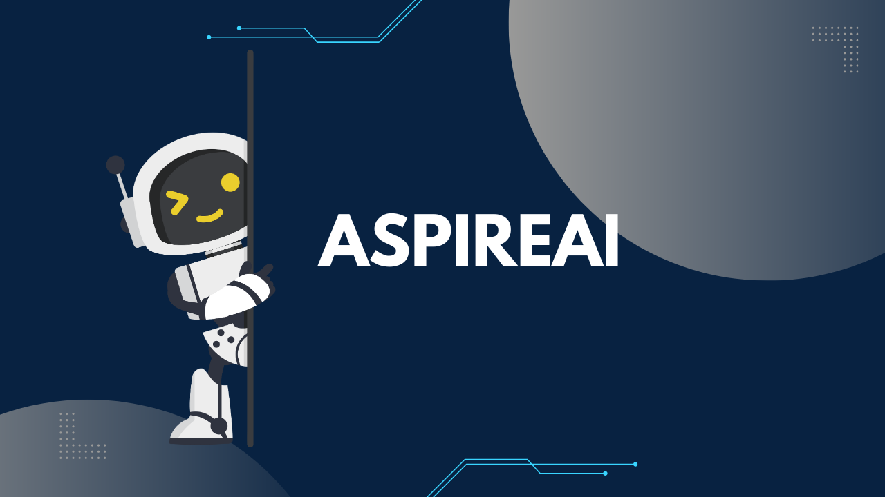

Case Study
AspireAI
Your future, made clearer.
Portfolio Demo · AI Features Require API Keys
The Problem
Career planning is usually scattered across generic job boards, disconnected resume tools, and separate interview-prep sites, with no single place that ties them together. AspireAI is built for high schoolers exploring options, college students preparing for internships, and career switchers who want a clearer next step — using AI as a mentor that helps someone interpret their own interests, rather than a tool that just hands them a generic answer.
My Role
I designed and built AspireAI end-to-end: the Next.js application, the Firebase authentication flow, the career-matching retrieval system, and the multi-stage AI agent pipeline that powers resume review and mock interviews.
Key Technical Decisions
- Agent pipeline as typed functions, not a framework. Resume review, tailored interview prep, and structured feedback are chained through sequential, typed functions (resume agent → research agent → interviewer agent) instead of an external orchestration library, keeping the flow easy to follow and debug.
- Local embeddings over a paid vector database. Career recommendations use retrieval-augmented generation against precomputed local embeddings and cosine similarity, so career matching works without a recurring hosted vector-database cost.
- Whisper + GPT-4o for structured interview feedback. Recorded practice answers are transcribed with Whisper, then scored against a STAR-method rubric by GPT-4o, turning an unstructured recording into concrete strengths, gaps, and rewrite suggestions.
- Firebase Authentication for account handling. Signup, login, logout, and password updates run through Firebase rather than a custom auth system, so the app didn't need to own password storage or session security.
Challenges & Solutions
Interview practice needed to support video, audio, and text modes without every screen depending on a live OpenAI key just to render. I scoped each AI integration — mentor chat, resume analysis, transcription, interview feedback — as an isolated, individually-degradable feature, so the dashboard, career browsing, and roadmap stay fully usable even when an OpenAI key is missing, expired, or rate-limited, and the interface says so honestly instead of failing silently.
Status & What's Next
AspireAI is a fully built, demoable product — the interface, routing, and product flows all work today. The AI-powered surfaces (mentor chat, career matching, resume review, interview feedback) need a funded OpenAI key and a configured Firebase project to run live, since this was built as a portfolio-stage product rather than a hosted service with an ongoing API budget.